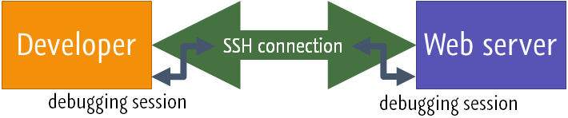

Оригинал
Remote debugging via SSH tunnel
Удаленная отладка через SSH-туннель
Last modified: 08 March 2021
Последнее изменение: 8 марта 2021 г.
This tutorial describes how to use an SSH tunnel to setup a secure connection between the development machine and a remote server. This can be useful for debugging code on a remote machine when there are firewalls in between, or a NAT router prevents direct connection, or the ISP or network infrastructure does not allow incoming TCP connections to the developer machine.
В этом руководстве описывается, как использовать туннель SSH для установки безопасного соединения между машиной разработки и удаленным сервером. Это может быть полезно для отладки кода на удаленном компьютере, когда между ними установлены брандмауэры, или маршрутизатор NAT предотвращает прямое соединение, или интернет-провайдер или сетевая инфраструктура не разрешают входящие TCP-соединения с машиной разработчика.
Prepare the debugging engine
Подготовьте движок отладки
Before you start debugging, make sure that you have a debugging engine installed and configured properly. PhpStorm supports debugging with two most popular tools: Xdebug and Zend Debugger. These tools cannot be used simultaneously because they block each other. To avoid this problem, you need to update the corresponding sections in the php.ini file as described in Configure Xdebug and Configure Zend Debugger.
Перед тем, как начать отладку, убедитесь, что у вас установлен и правильно настроен механизм отладки. PhpStorm поддерживает отладку с помощью двух самых популярных инструментов: Xdebug и Zend Debugger. Эти инструменты нельзя использовать одновременно, потому что они блокируют друг друга. Чтобы избежать этой проблемы, вам необходимо обновить соответствующие разделы в файле php.ini, как описано в разделах «Настройка Xdebug» и «Настройка Zend Debugger».
Open the active php.ini file in the editor:
Откройте в редакторе активный файл php.ini:
In the Settings/Preferences dialog Ctrl+Alt+S, click PHP.
В диалоговом окне «Настройки / Предпочтения» Ctrl + Alt + S щелкните PHP.
On the PHP page that opens, click the Browse button next to the CLI Interpreter field.
На открывшейся странице PHP нажмите кнопку «Обзор» рядом с полем «Интерпретатор интерфейса командной строки».
In the CLI Interpreters dialog that opens, the Configuration file read-only field shows the path to the active php.ini file. Click Open in Editor.
В открывшемся диалоговом окне «Интерпретаторы интерфейса командной строки» в поле «Файл конфигурации», доступном только для чтения, отображается путь к активному файлу php.ini. Щелкните Открыть в редакторе.
When using Xdebug, make sure at least the following settings are specified:
При использовании Xdebug убедитесь, что указаны как минимум следующие параметры:
XDebug2
[
xdebug
]
zend_extension=""
xdebug.remote_enable=1
xdebug.remote_host=127.0.0.1
xdebug.remote_port=""
XDebug3
[
xdebug
]
zend_extension=""
xdebug.mode=debug
xdebug.client_host=127.0.0.1
xdebug.client_port=""
Listening for incoming debugger connections
Прослушивание входящих соединений отладчика
In PhpStorm, enable listening to incoming debug connections by either clicking the Start Listening for PHP Debug Connections button on the toolbar or selecting Run | Start Listening for PHP Debug Connections in the main menu. This will ensure PhpStorm reacts when a debugging session is started and opens the Debug tool window automatically. Before launching the script, make sure that either a breakpoint is set or the Break at first line in PHP scripts option is enabled on the Debug page of the Settings/Preferences dialog Ctrl+Alt+S.
В PhpStorm включите прослушивание входящих отладочных подключений, нажав кнопку «Начать прослушивание подключений отладки PHP» на панели инструментов или выбрав «Выполнить» | Начните прослушивание подключений отладки PHP в главном меню. Это гарантирует, что PhpStorm среагирует при запуске сеанса отладки и автоматически откроет окно инструмента отладки. Перед запуском сценария убедитесь, что либо установлена точка останова, либо включен параметр «Прервать первую строку в сценариях PHP» на странице «Отладка» диалогового окна «Параметры / Параметры» Ctrl + Alt + S.
Set up an SSH tunnel to the remote machine
Настроить SSH-туннель к удаленному компьютеру
What we want to do is connect to the remote machine over SSH and set up port forwarding for port 9000 (for Xdebug 2), 9003 (for Xdebug 3), or 10137 (Zend Debugger). The idea is to create a "virtual" TCP port on the remote server that sends its traffic to a TCP port on our own machine, tunneling traffic over SSH.
Что мы хотим сделать, так это подключиться к удаленному компьютеру через SSH и настроить переадресацию портов для порта 9000 (для Xdebug 2), 9003 (для Xdebug 3) или 10137 (Zend Debugger). Идея состоит в том, чтобы создать «виртуальный» TCP-порт на удаленном сервере, который отправляет свой трафик на TCP-порт на нашей собственной машине, туннелируя трафик через SSH.

SSH tunnel diagram
Схема туннеля SSH
The SSH tunnel is used for connecting through a firewall and establishing a secure connection between the remote server and the developer machine. When the remote server can connect to the developer machine directly (for example, with a Vagrant machine), an SSH tunnel may not be needed.
Туннель SSH используется для подключения через брандмауэр и установления безопасного соединения между удаленным сервером и машиной разработчика. Когда удаленный сервер может напрямую подключаться к машине разработчика (например, с машиной Vagrant), туннель SSH может не понадобиться.
In this case, we need to make the debugger connect back to the developer machine by setting xdebug.remote_host=ip_address (for Xdebug 2), xdebug.client_host=ip_address (for Xdebug 3) or making sure the debug host is the IP address of the developer machine (for Zend Debugger). This can be done using the PhpStorm bookmarklets, a Browser Debugging Extension, or the techniques outlined in Debugging PHP CLI scripts with PhpStorm.
В этом случае нам нужно заставить отладчик подключиться обратно к машине разработчика, установив xdebug.remote_host = ip_address (для Xdebug 2), xdebug.client_host = ip_address (для Xdebug 3) или убедившись, что хост отладки является IP-адресом машина разработчика (для Zend Debugger). Это можно сделать с помощью букмарклетов PhpStorm, расширения отладки браузера или методов, описанных в разделе «Отладка сценариев PHP CLI с помощью PhpStorm».
The setup process depends on the operating system and the debugger being used.
Процесс установки зависит от операционной системы и используемого отладчика.
PREV
NEXT